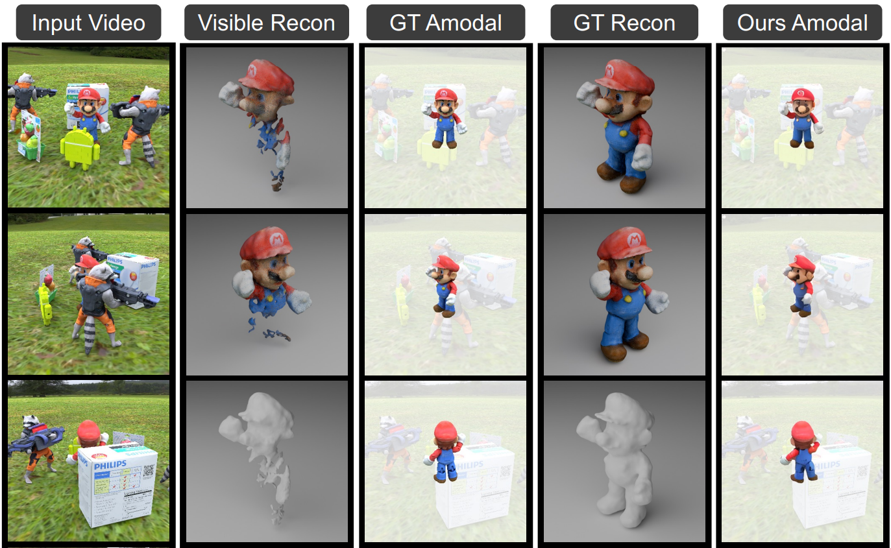
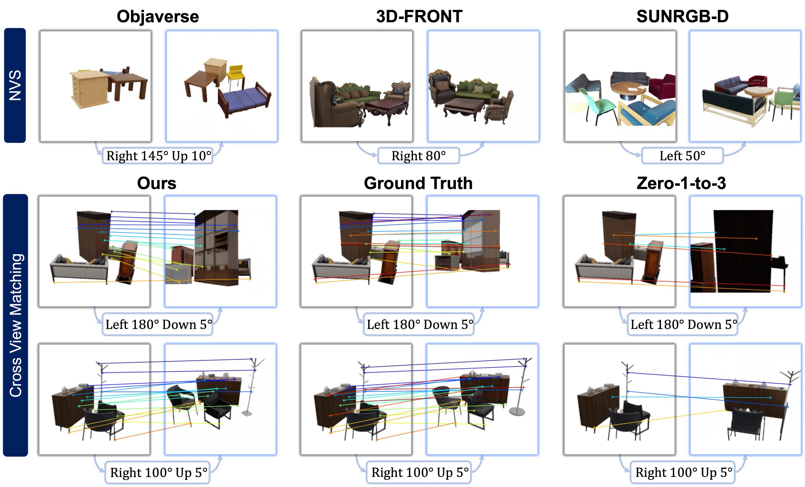

Publications
G4Splat: Geometry-Guided Gaussian Splatting with Generative Prior
Junfeng Ni, Yixin Chen✉, Zhifei Yang, Yu Liu, Ruijie Lu, Song-Chun Zhu, Siyuan Huang✉
ICLR 2026
VideoArtGS: Building Digital Twins of Articulated Objects from Monocular Video
Yu Liu, Baoxiong Jia✉, Ruijie Lu, Chuyue Gan, Huayu Chen, Junfeng Ni, Song-Chun Zhu, Siyuan Huang✉
arXiv 2025
3D Scene Change Modeling with Consistent Multi-View Aggregation
Zirui Zhou, Junfeng Ni, Shujie Zhang, Yixin Chen✉, Siyuan Huang✉
3DV 2026
DreamArt: Generating Interactable Articulated Objects from a Single Image
Ruijie Lu, Yu Liu, Jiaxiang Tang, Junfeng Ni, Yuxiang Wang, Diwen Wan, Gang Zeng✉, Yixin Chen✉, Siyuan Huang✉
SIGGRAPH Asia 2025
Trace3D: Consistent Segmentation Lifting via Gaussian Instance Tracing
Hongyu Shen*, Junfeng Ni*, Yixin Chen✉, Weishuo Li, Mingtao Pei, Siyuan Huang✉
ICCV 2025

TACO: Taming Diffusion for in-the-wild Video Amodal Completion
Ruijie Lu,
Yixin Chen✉,
Yu Liu,
Jiaxiang Tang,
Junfeng Ni,
Diwen Wan,
Gang Zeng✉,
Siyuan Huang✉
ICCV 2025
Decompositional Neural Scene Reconstruction with Generative Diffusion Prior
Junfeng Ni, Yu Liu, Ruijie Lu, Zirui Zhou, Song-Chun Zhu, Yixin Chen✉, Siyuan Huang✉
CVPR 2025
